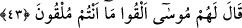
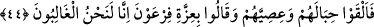

42. Fir’avn cevap verdi: “Evet, o takdirde hiç şüphe etmeyin, gözde kimselerden
de olacaksınız.”
“Fir’avn cevap verdi: “Evet,” size o büyük ödül verilecek, sizin bir ücretiniz olacak
“o takdirde” galip gelmeniz durumunda “hiç şüphe etmeyin,” o büyük ödülle birlikte
“gözde kimselerden de olacaksınız.” Benim nezdimde huzuruma ilk giren ve en son
çıkan kimseler olacaksınız.” Bu onlara göre en yüksek derecelerden sayılırdı. Sultan ve
benzerlerine yakın olma konusunda dünya ehlinin hâli böyledir. Halbuki akıl sâhiplerine
göre bu gibi şeyler en büyük musîbetlerdendir.
Sihirbazlar bu vaade güvenerek sihirlerini belirlenen meydana getirdiler. Belirlenmiş
vakitte Hz. Musa’nın karşısında dizildiler ve “Ey Musa, sihrini sen mi önce atacaksın
yoksa biz mi atacağız?” dediler.
43. Musa onlara: “Ne atacaksanız atın!” dedi.
Mûsâ (a.s.) bu sözüyle onlara sihir ve sahtekarlık yapmalarını emretmeyi
kasdetmemiştir. Çünkü bu câiz değildir. Bilakis bunu hakkı ızhâr ve bâtılı ortadan
kaldırmaya vesîle kılarak onların mutlaka yapacakları bir işte öne geçmelerine izin
vermiştir.
Keşfü’l-esrâr’da der ki: “Bu sözün zâhiri emir, mânâsı ise bu emir ve işte onları
hafife almak, onları ve yaptıklarını önemsememektir.”
44. Bunun üzerine iplerini ve değneklerini attılar ve: “Fir’avn’un kudreti hakkı
için elbette biz galip geleceğiz.” dediler.
“Bunun üzerine iplerini ve değneklerini attılar ve:” Sonra içleri civa dolu ip ve
asâlarını attılar. Bunlar yetmiş bin ip, yetmiş bin asa idi. Asâ ve ipler, güneşin
harâretiyle hareket etmeye başlayıp insanlar arasında çığlıklar yükselince atarken yemin
ederek “Fir’avn’un kudreti hakkı için” Fir’avn’un büyüklüğü, gücü ve üstünlüğü hakkı
için “elbette biz”: Mûsâ ve Hârun’a “galip geleceğiz.” dediler.” Kendilerine aşırı
güvendikleri ve yapılması mümkün en ileri sihri ortaya koyacakları için üstünlüğün
kendilerinde olacağını belirtmek üzere Fir’avn’un izzetine/kudretine yemin ettiler.
Allah’tan başkası adına yemin etmek, câhiliyye âdetlerindendir. Bir hadiste:
“Babalarınızın, annelerinizin ve putların isimleriyle yemin etmeyin. Ancak sözünüzde
sâdık olarak Allah’ın ismiyle yemin edin.”[6]